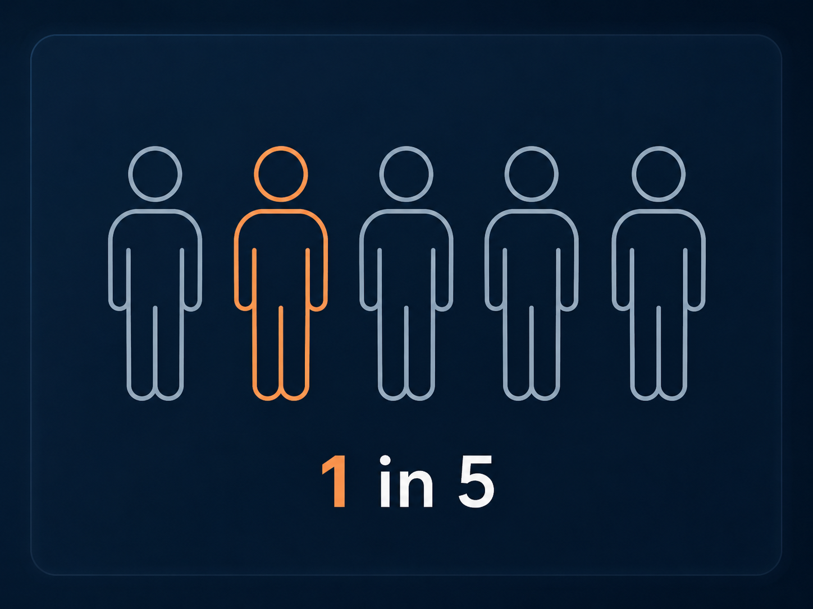
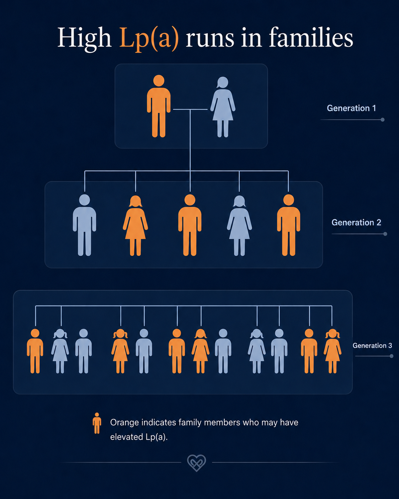

How one inherited signal can amplify more than one heart risk pathway.
This atlas shows how high Lipoprotein(a) [Lp(a)] can sit upstream of artery, valve, and family risk pathways. Use the slider to move from inherited signal to lifelong exposure, artery amplification, valve amplification, and compounded risk context.
Common and inherited
Why Lp(a) needs its own risk map
Lp(a) matters because it is both common and largely inherited. These two facts change the conversation: one result can clarify risk for one person, and may also point relatives toward testing.
Common

Roughly 1 in 5 people have elevated Lp(a).
This makes high Lp(a) common, even though many people have never heard of it, and standard cholesterol checks do not include it.
High Lp(a) can increase risk because:
The level matters. Almost everyone has some Lp(a); the risk comes from having elevated levels.
Lp(a) is less familiar than HDL or LDL. Many people know about “good” and “bad” cholesterol, but few have heard of “stealth” cholesterol.
Lifestyle matters. Even if it does not directly lower Lp(a), lifestyle can reduce other risks around it.
New treatment trials are underway. Several Lp(a)-targeting medicines are being tested, including gene-silencing therapies.
It can be part of a complicated risk picture. Insulin resistance and metabolic risk, for example, can make Lp(a) numbers and interpretation more challenging.
Inherited

Lp(a) can run through families.
If one person has high Lp(a), close relatives may also need testing. The highlight shows possible family relevance, not certainty for every relative.
1
Test once. Lp(a) is inherited, so one test can clarify your lifelong risk signal. But a low number does not always mean all clear. In insulin resistance or high-insulin states, Lp(a) may be "masked" and appear low, which is why any result needs wider risk context.
2
Build your risk picture. Your risk is easier to understand when Lp(a) is read alongside ApoB, blood pressure, metabolic risk, inflammation, imaging, and family history details.
3
Have informed conversations. Your result may help your parents, siblings, children, and other people you love consider whether to get tested, and help you make better decisions with your health team.
Lp(a) risk pathway visualisation
Amplifier view reveals risk-layer chips, family links, and module hand-offs. It does not estimate your personal risk.
High Lp(a) is rarely a single-answer problem. The practical question is how it fits with your current tests, family history, artery risk, valve risk, and modifiable risk layers. Start with Clarify if you need to organise what your checks show and miss. Use Navigate if you already have signals to connect. Use Prevent if you want a structured plan to reduce avoidable cardiovascular damage.